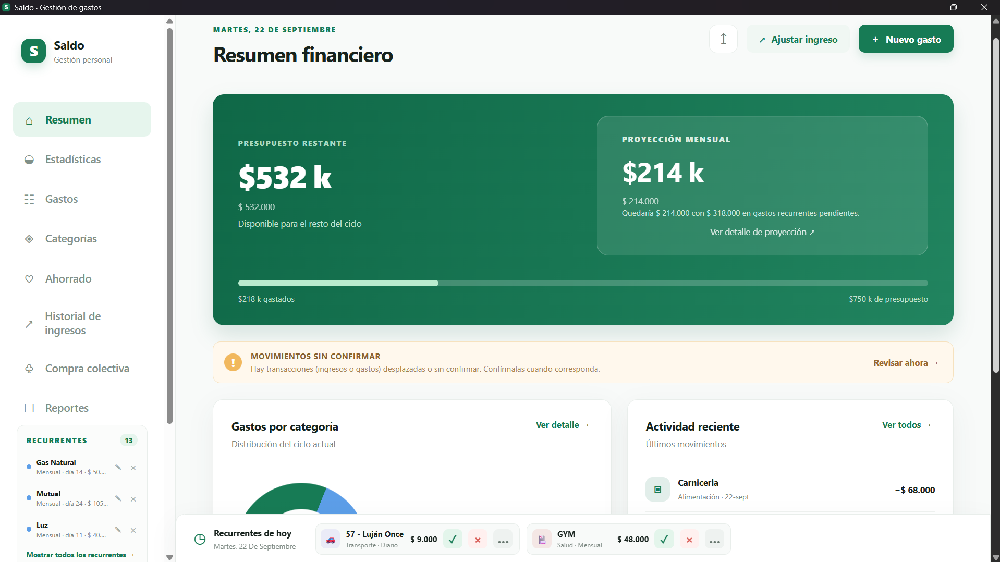
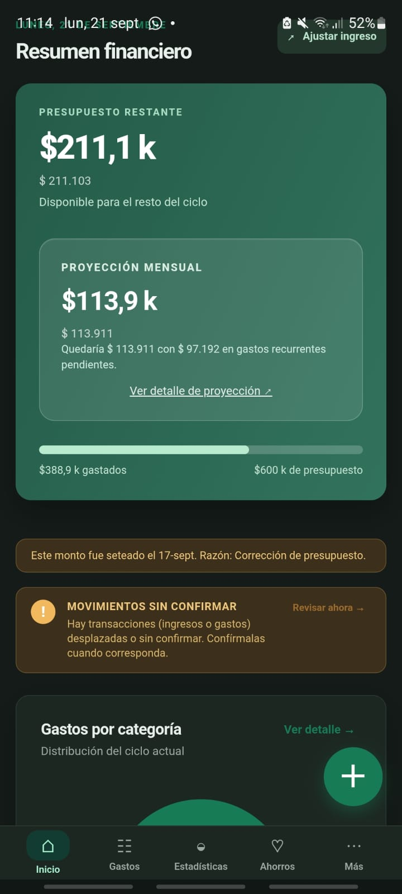
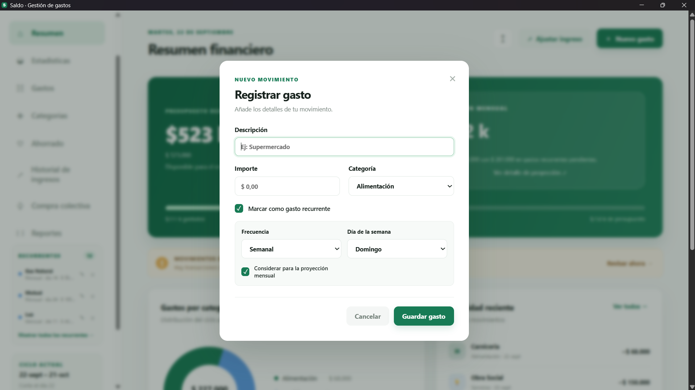
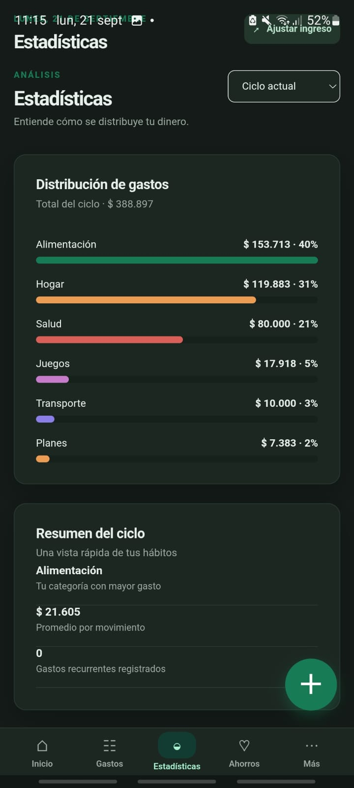
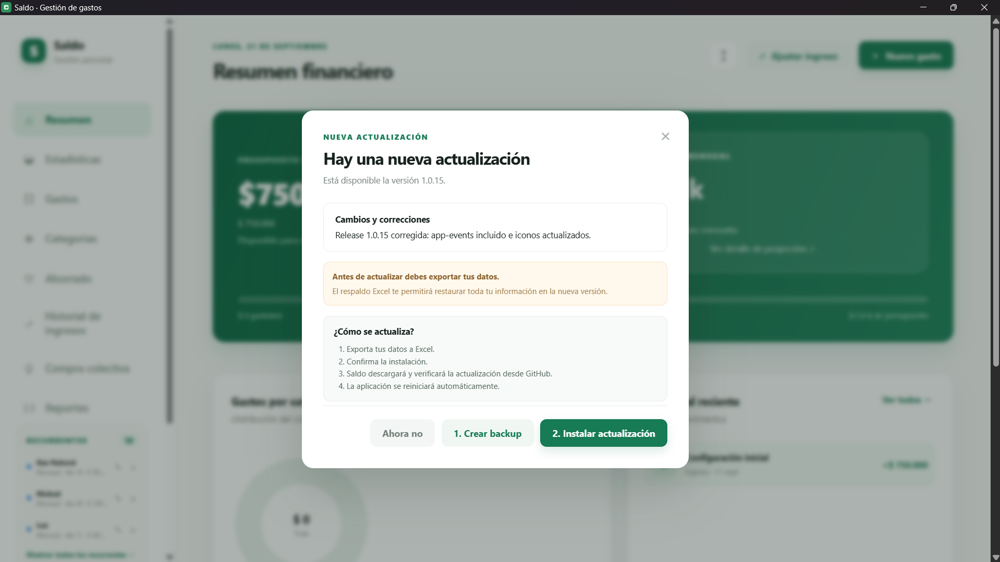
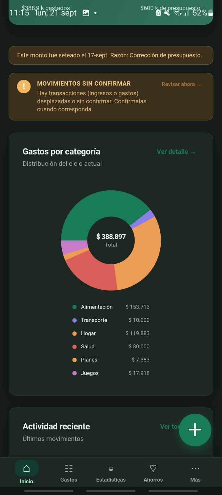
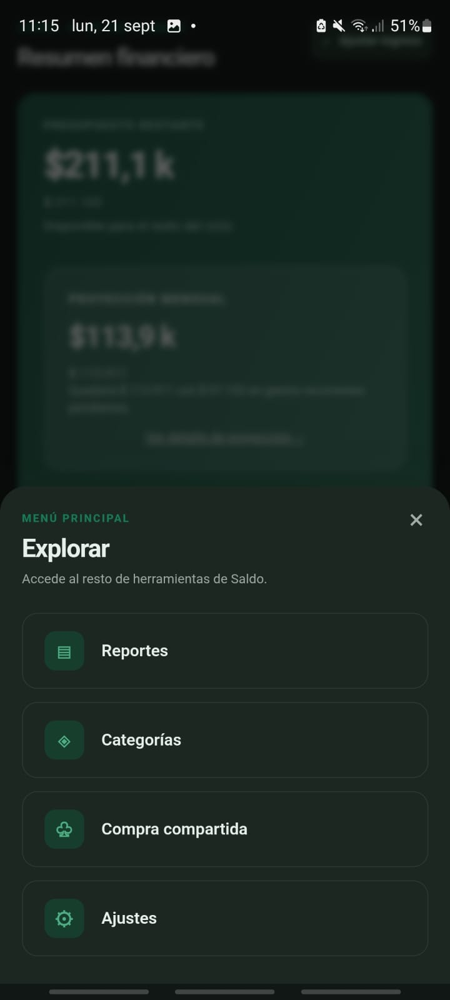

Proyección inteligente
Analiza tus recurrentes pendientes y calcula cuánto dinero exacto te quedará al finalizar el mes.
App nativa para Windows
Organiza tus ingresos, registra tus gastos y descubre cuánto dinero realmente tienes disponible. Todo simple, privado y desde un solo lugar.
Presupuesto restante
$185.000Disponible para el resto del ciclo
¿Cómo funciona?
Ingresa tu saldo inicial y define tu fecha de cobro para establecer el ciclo.
Anota tus gastos diarios y configura los pagos recurrentes (servicios, cuotas).
La app calcula automáticamente tu proyección mensual y tu dinero disponible.
Todo lo que necesitas
Saldo no es solo una lista de gastos. Es una herramienta diseñada para anticiparse a los problemas y ayudarte a tomar decisiones financieras con información real.
Analiza tus recurrentes pendientes y calcula cuánto dinero exacto te quedará al finalizar el mes.
Administra alquiler, servicios y suscripciones. Márcarlos como pendientes, aprobados o postergados.
Registra gastos compartidos (asados, viajes). La app calcula automáticamente quién le debe a quién.
Al cerrar el ciclo, el saldo positivo sobrante se transfiere automáticamente a tu fondo de ahorro.
Visualiza estadísticas de consumo, genera reportes en PDF o exporta toda tu data a Excel.
Tus números son tuyos. Todo se guarda localmente en tu PC sin depender de la nube de terceros.
Interfaz multiplataforma
Desliza para explorar cómo se ve Saldo de forma nativa en tu PC de escritorio y en tu celular Android.







Roadmap
Esta aplicación está en desarrollo activo. Mi objetivo es que crezca con el tiempo sin perder su simplicidad. Esto es lo que se viene:
La base del proyecto. Gestión de presupuesto, control de recurrentes y proyecciones. Las actualizaciones menores estarán dedicadas a corregir bugs y sumar mejoras de calidad de uso.
Compatibilidad nativa confirmada en progreso para Android y Linux. (iOS y macOS en veremos).
Vas a poder asignar un ingreso a 'Efectivo', a tu cuenta sueldo o al 'Banco del Zapallo' para organizarte con precisión milimétrica.
Implementación de la cámara para escanear recibos rápido. La regla de oro se mantiene: NADA de tu información pasará por servidores externos. El procesamiento OCR será 100% local.
¡Hola! Soy Cristian, el desarrollador detrás de Saldo. Soy estudiante de la Licenciatura en Sistemas de Información y Técnico Superior en Seguridad e Higiene (sí, nada que ver, pero ahí andamos).
Saldo nació de la pura necesidad diaria. Todo empezó como un pedido de uno de mis amigos más cercanos para organizar sus números sin volverse loco. Al mismo tiempo, yo también necesitaba administrar al milímetro el presupuesto de mi casa y calcular los viáticos para ir a cursar sin quedar en rojo a mitad de mes.
Quería una herramienta rápida, desarrollada de forma nativa (usando Tauri para Windows) y con una regla de oro: que los datos financieros de las personas no vayan a la nube de nadie. Además, este proyecto es mi espacio de aprendizaje personal para explorar nuevas herramientas de desarrollo y entender cómo adaptarlas al nuevo paradigma de la Inteligencia Artificial.
La app la desarrollo y mantengo en mi tiempo libre. Si Saldo te está ayudando a sobrevivir a la economía de guerra, a planificar mejor o simplemente a llegar más tranquilo al próximo cobro, podés darme una mano: